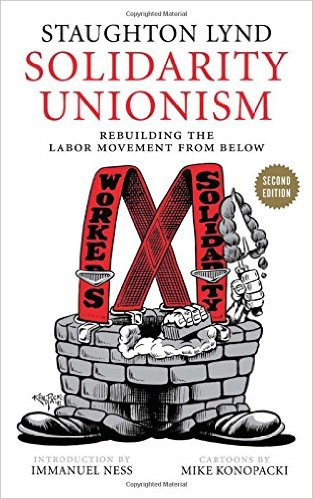

Can “solidarity unionism” save the labor movement?
Submitted on Sun, 11/08/2015 - 2:56pm
By Eric Dirnbach - Waging Nonviolence, November 4, 2015
The debate on how to revive the troubled U.S. labor movement has been around for decades. Labor activists generally believe that much greater rank-and-file democracy and workplace militancy is the key to labor renewal. However, an essential perspective that is usually missing from the conversation is well represented by Staughton Lynd’s “Solidarity Unionism: Rebuilding the Labor Movement from Below,” which was first published in 1992 and has been recently reissued.
Lynd is a legendary progressive lawyer and activist from Youngstown, Ohio. He is the coauthor with his wife Alice Lynd of the classic “Rank and File: Personal Histories by Working-Class Organizers,” a collection of oral histories of militant union organizers, which informs much of the framework of “Solidarity Unionism.” At around 100 pages, the book reads more like a summary of his organizing philosophy, and many readers will come away wanting a more extensive discussion. It should be read along with several other recent books which make similar arguments: Stanley Aronowitz’s “The Death and Life of American Labor: Toward a New Workers’ Movement,” and “New Forms of Worker Organization: The Syndicalist and Autonomist Restoration of Class-Struggle Unionism,” edited by Immanuel Ness, who also provided the introduction for “Solidarity Unionism.”
Lynd argues for a rethinking of the assumptions of the labor movement and for a revived version of labor organizing that was more prominent in the pre-New Deal era that he calls “solidarity unionism.” What may surprise most labor-oriented readers is that central to this kind of unionism is the absence of a contract between the union and the employer.
Isn’t the whole point of forming a union to get a written collective bargaining agreement? Lynd doesn’t think so and he argues that workers fighting together with direct action on the job to make improvements in the workplace do not need a contract and may be hurt by having one. He is critical of the “management rights” and “no-strike” clauses that are standard in almost all union contracts. He believes they reduce the power of workers to influence major decisions in how the workplace is run and to solve their problems at work immediately as they arise. Contracts tend to remove agency from the workers and place it in the hands of union staff who typically bargain and process grievances while the members may be uninvolved and cynical. Lynd is also skeptical of a union’s exclusive representation of all workers in the workplace and automatic dues check-off, preferring for workers to actively join the union and pay dues because they want to.
Lynd’s view of the prevailing “contract unionism” differs from standard labor history, which considers the 1935 National Labor Relations Act, or NLRA, labor reforms as a progressive advance for workers. In the mainstream view, workers organizing, with the support of President Roosevelt, finally won full government enforcement for the right to organize and bargain collectively. In exercising this right, unions typically hold workplace elections and then negotiate contracts with employers that set the conditions of employment and also guarantee labor peace (no strike/no lockout) for the term of the contract. This industrial relations framework led the way for millions of workers to organize and improve their wages and working conditions. This “class compromise” held for several decades until employers changed their mind and increased their opposition to unionization again.
For Lynd, this view is backwards. Workers were already organizing and improving working conditions, but the NLRA contract system was then imposed by the government to tame a militant 1930s labor movement and create the conditions for industrial peace. Opportunistic labor leaders used the rank-and-file workers’ disruptions to step in as responsible partners that could restore order with a union contract. Unions became contract administrators who disciplined unruly workers. Moreover, the ejection of the labor movement’s radical wing during the anti-Communist scare of the 1940s and 1950s eliminated a whole culture of militant unionism. Over the years, rank-and-file initiative and militancy has been weakened, such that when the employer anti-union offensive resumed in the 1970s and 1980s, unions were unprepared.
What does Lynd’s type of solidarity union look like? Shop floor committees based in workgroups organize and take direct action on the job to fight for their demands. The issues could be a wage increase or better scheduling and the actions could be marches on the boss, slowdowns, or other tactics. The goal is not to get official union recognition from the employer and a written contract, but simply the workplace improvements. If the workers have another grievance a month or a year later, they take further action to address it. This has been the model of the Industrial Workers of the World for over 100 years and is also the way many workers centers operate. Solidarity and initiative among coworkers with community support is the basis for this kind of unionism.
As an example, Lynd quotes John Sargent who worked at Inland Steel in Chicago in the late 1930s. “Without a contract we secured for ourselves agreements on working conditions and wages that we do not have today, and that were better by far than what we have today in the mill,” he said. “For example as a result of the enthusiasm of the people in the mill you had a series of strikes, wildcats, shut-downs, slow-downs, anything working people could think of to secure for themselves what they decided they had to have.”
Given Lynd’s analysis, what should the labor movement do today? Lynd doesn’t appear to advocate that unions rip up their contracts. But he does encourage the formation of rank-and-file shop floor committees. Union workers can certainly incorporate aspects of solidarity unionism by practicing workplace militancy as much as possible even with contracts in place, as Labor Notes has advocated for decades. Non-union workers can form independent unions based on solidarity unionism principles. We may also see more hybrid types of organizing, such as the fast food and OUR Walmart campaigns, sponsored by mainstream unions, and based in part on workplace actions. Some labor radicals are encouraged by these campaigns as something new, but Lynd reminds us that they recreate older forms of organizing, at least to the extent that they involve genuine worker leadership rather than stage-managed media events.
Lynd also encourages the formation of what he calls “parallel central labor councils” which are groups of workers in an area from different workplaces that provide solidarity to each other in their struggles. Lynd cites several examples of rank-and-file worker controlled solidarity initiatives in Youngstown in the 1980s, such as the Workers’ Solidarity Club, which provided picket line support and organizing assistance, as well as hosted educational and social events.
Given that almost 90 percent of U.S. workers are non-union, there is certainly a great opportunity to build a large solidarity union movement of the kind Lynd outlines. However, organizing is risky and groups that practice solidarity unionism in its purest form will tend to be small, with few staff or resources, depending almost entirely on the workers themselves. This is a lot to ask. Indeed many members of mainstream unions may point to the benefits of having a large, stable organization with contracts, funds, benefit plans, dedicated staff, lawyers, and political relationships. But for Lynd, these kinds of institutional arrangements tend to come at the cost of democracy and militancy.
This raises, I think, the greatest challenge and dilemma for this kind of unionism. It allows the best chance for workers to run their own union, making their own decisions on strategy and tactics with maximum democracy and freedom of action. But it also carries potentially more risk as workers are exposed to changes in workplace policy and arbitrary boss behavior without any written contract protections. Lynd would likely make the claim that contracts offer no real protection without worker power to back it up, and if you have that power you don’t need the contract. No doubt that’s true in some cases.
Ultimately the solidarity unionism model essentially makes two broad claims: that the outcomes for workers will be better and that it is a way of organizing that can more effectively challenge capitalism. Regarding workplace outcomes, this is a fascinating question that needs more data and there may possibly be too few documented modern cases of workplace organizing and improvements outside of the formal contract system. This certainly deserves more attention.
Regarding the challenge to capitalism, although Lynd doesn’t develop this point at length, he links solidarity unionism with the potential to build a socialist society. This is consistent with Lynd’s view that mainstream union practices cannot meaningfully challenge capitalism. We can see how this might be true since the regular practice of workplace militancy will likely develop more class-conscious fighters of the system than staff-directed contract bargaining. And a mainstream union’s assets and relationships tend to enmesh it in the capitalist system, making alternatives hard to envision within typical union practices.
In any case, union contracts and the working conditions they codify are the current compromise between labor and capital in any given workplace. With or without a contract, workers will have to struggle. Lynd doesn’t seem to consider the possibility that some workers may not be looking for constant class warfare on the job, and that settling a decent contract offers a much needed respite to lock-in gains. In any case, labor radicals should meet the workers where they are, and workers themselves should decide what kind of union they want. Let’s have many different organizing forms and see what works. The philosophy and practice of solidarity unionism provides a critical reminder of alternative ways of organizing and a valuable framework for the stronger and more militant labor movement that we need.
Disclaimer: The views expressed here are not the official position of the IWW and do not necessarily represent the views of anyone but the author’s.